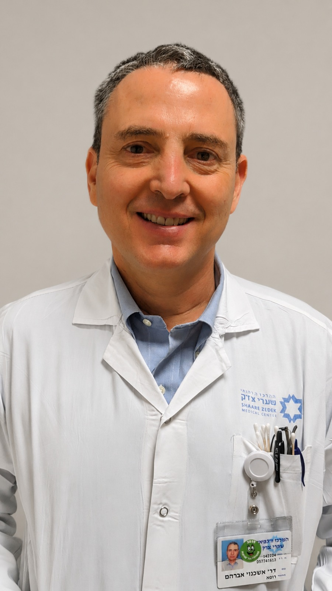
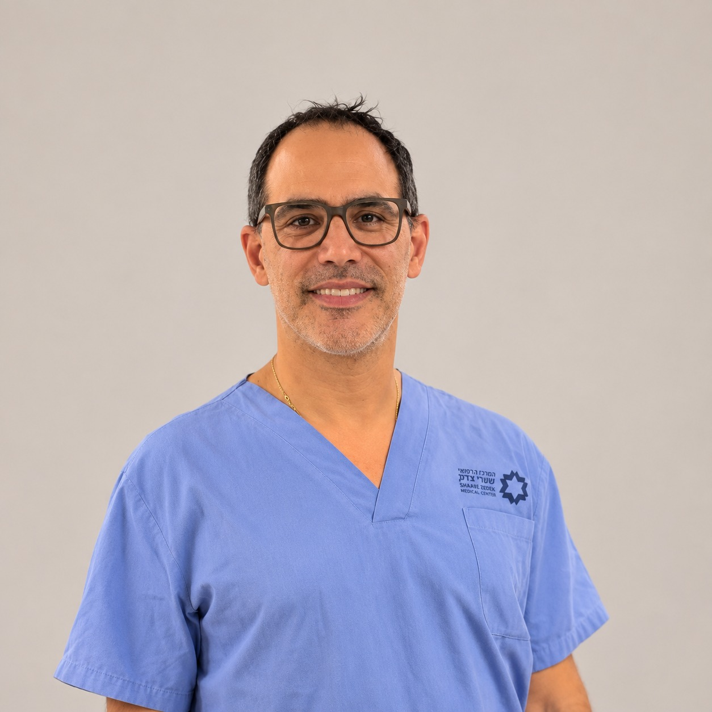

הרופאים המובילים לטיפול בדליפות CSF בשערי צדק
פרופיל מלא, תחומי מומחיות ופרטי התקשרות וזימון תורים לכל רופא:

ד"ר אברהם (אבי) אשכנזי
מנהל שירות אבחון וטיפול בכאבי ראש, שערי צדקנוירולוג מומחה בעל ניסיון של מעל 24 שנים והכשרה במרכזים המובילים בארה"ב (חבר ה-AHS וה-IHS). מוביל את האבחון הקליני של כאבי ראש תנוחתיים ותת-לחץ תוך-גולגולתי (SIH), התאמת טיפול תרופתי, חסמים עצביים וליווי המטופל לאורך שלבי האטימה, ההחלמה ומעקב לחץ חוזר (Rebound).
- מוקד זימון תורים: 02-6555999
- מזכירות נוירולוגיה: 02-6666641
- דוא"ל: neurology@szmc.org.il
- מיקום: מרפאות נוירולוגיה, קומה 7, רח' שמואל בייט 12, ירושלים
ד"ר אליאל בן דוד
מנהל היחידה לדימות ראש וצוואר, שערי צדקמומחה ברדיולוגיה אבחנתית ובעל תת-התמחות בנוירורדיולוגיה מבית החולים האוניברסיטאי George Washington בוושינגטון, ארה"ב. מתמחה בפענוח רגיש של הדמיות מוח ועמוד שדרה (MRI/CT), מילוגרפיות, איתור מדויק של מוקד דליפת ה-CSF וביצוע טלאי דם ממוקדים תחת הדמיה.
- זימון תורים דימות: 02-6555999
- מכון דימות ורנטגן: 02-6555005
- דוא"ל: rad@szmc.org.il
- מיקום: אגף הדימות, המרכז הרפואי שערי צדק, ירושלים

ד"ר דניאל אגיון / צוות נוירוכירורגיה
המחלקה הנוירוכירורגית ומומחי עמוד שדרה, שערי צדקמומחה לנוירוכירורגיה וניתוחי עמוד שדרה מורכבים (יחד עם מערך הנוירוכירורגיה בהובלת ד"ר נבו מרגלית ומומחי עמוד השדרה). מתמחה בניתוחים מיקרו-כירורגיים וזעיר-פולשניים לתיקון דליפות CSF עקשניות, תפירת קרעים במעטפת הדורה ושיוף בליטות גרמיות דוקרות (Spurs).
- מוקד זימון תורים: 02-6555999
- מזכירות נוירוכירורגיה: 02-6666265
- דוא"ל: neurosurgery@szmc.org.il
- מיקום: מחלקת נוירוכירורגיה, קומה 6, שערי צדק, ירושלים